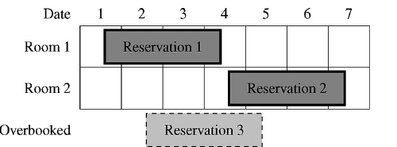
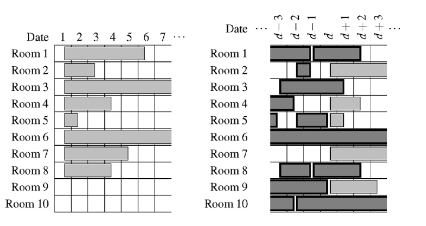
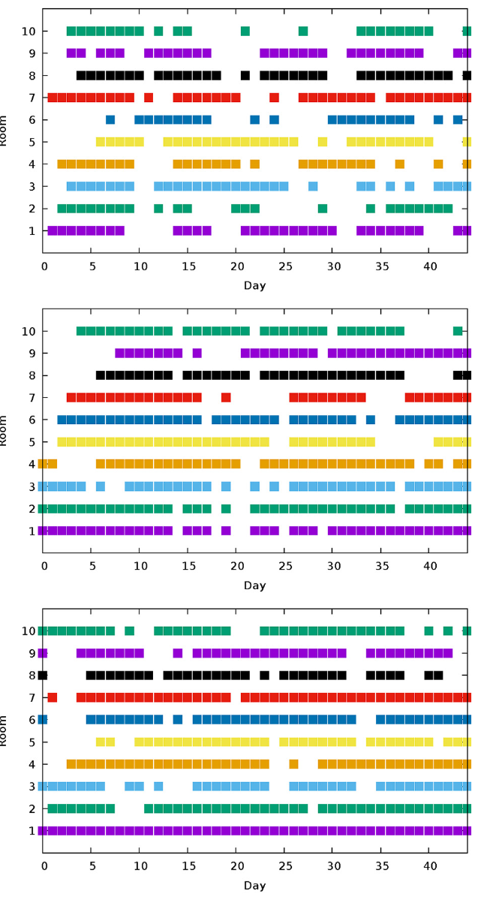

- 断った日数 24.83% → 14.46%10室・365日、1泊（確率0.6）と7泊（確率0.4）が混ざる需要で、FirstFit と RoomTetris の比較（1,000回の平均）。断った日数は 41.76% 減った。
- 下限 12.10% に近い日ごとに部屋数を超えた需要を足した、どの方法でも避けられない断りの割合。RoomTetris との差は、1日でも満室の日を含む7泊の予約は全体が断られることによる。
- どの日も部屋数以内なら必ず入るチェックイン日の順に割り当てるので、前日までの予約がすべて入っていれば当日の予約も入る。帰納法で最適性を示した。
予約を受けた時点で部屋番号を決めると、空いた日が部屋ごとに散らばり、長い滞在が入らなくなる
ホテルは部屋そのものではなく部屋タイプを売ることが多く、どの部屋番号に入れるか（room committing）には自由がある。それでも、部屋を個別に売っていたり、受付係が手で割り当てたり、チャネルマネージャー（予約サイトとの接続ソフト）が受けた直後に部屋番号を決めたりして、予約の直後に部屋が決まることが多い。稼働率が高くなると、空きはまだあるのに部屋ごとに散らばり、2日以上の依頼に必要な連続した空きが見つからなくなる。そこで予約サイトでの販売を早めに止めたり、シーズン初めに3泊以上などの最短滞在日数を課したりする。経験豊富な従業員がときどき部屋割りを組み直す作業を、論文は「RoomTetris」や「room candy crush」のようなゲームにたとえる。
論文は超過予約（オーバーブッキング）を受けず、到着後に客を別の部屋へ移さないと仮定する。そのうえで、ある日の予約数が部屋数を超える避けられない超過予約と、どの日も部屋数以内なのに割当のせいで入らない避けられる超過予約を区別する。前者はどんな割当でも解消できない。

RoomTetris は部屋番号をチェックイン日まで決めず、その日に始まる予約を長い順に空き部屋へ入れる
ホテルは日単位で部屋を売り、予約は受けた日、開始日、終了日を持つとする。状態は、行が部屋、列が日の 0/1 の表（RoomPlan）で表す。比べる割当の方法は次のとおりである。
- ImmediateRandom：依頼が来たら部屋をランダムな順に見て、全日空いている最初の部屋に入れる。工夫のない基準。
- ImmediateFirstFit：部屋を決まった順（0番から）に見て、最初に入る部屋に入れる。多くのホテルの実務に近い。
- ImmediateMaxSlack / MinSlack：予約の前後に続く空き日数（前と後の少ないほう、スラック）が最大または最小になる部屋に入れる。大きな空きを残す、または予約を寄せて大きな空きを残す、という2つの直感を形にしたもの。
- RoomTetris（LazyJustInTime）：依頼が来ても部屋は決めず、日ごとの予約数が部屋数以内に収まるかだけで受けるかを決める。チェックイン日に、その日に始まる予約を長いものから順に最初の空き部屋へ入れる。将来の予約を知る必要はない。チェックイン日は、その日の予約と取り消しがすべて分かる最後の時点でもある。
即時割当の方法では、「どの日も部屋数以内」という受付の条件は、後で連続した空きが残ることを保証しない。RoomTetris ではこの条件が必要十分になる、というのが論文の主張である。証明は日付についての帰納法である。1日目はホテルが空なので、その日に始まる予約はすべて入る（部屋数以内であることは条件から分かる）。\(d-1\) 日目までに始まる予約がすべて入っているとする。条件から、\(d\) 日目に始まる予約の数は、続いている予約が使っていない部屋の数を超えない。しかも開始日の順に割り当てているので、\(d\) 日目に空いている部屋は、後の予約がまだ割り当てられていないため、それ以降もずっと空いている。よって \(d\) 日目に始まる予約はすべて入る。

満室に近い需要で、RoomTetris は断った日数の割合を 14.46% に下げ、下限の 12.10% に近づけた
満室に近い状況を作るため、期間内に依頼される泊数の合計がホテルの容量と等しくなるように需要を作った。部屋数10、期間365日、依頼される泊数は計3,650。各依頼は確率0.4で7泊、0.6で1泊で、開始日は一様にランダムである。乱数を変えて1,000回試し、依頼された日数のうち断った日数の割合を比べた。客室の価格が一定なら、この割合は失った利益に比例する。
| 方法 | 断った日数の割合 | 断った日数（平均） |
|---|---|---|
| ImmediateRandom | 34.29% | 1,250.24 |
| ImmediateFirstFit | 24.83% | 905.47 |
| ImmediateMaxSlack | 24.78% | 903.67 |
| ImmediateMinSlack | 25.03% | 912.62 |
| RoomTetris | 14.46% | 526.96 |
| 下限（部屋数を超えた需要の合計） | 12.10% |
表1 10室・365日、1泊と7泊が混ざる需要での比較（論文 3節の本文の値）。
即時割当の3つの工夫（FirstFit、MaxSlack、MinSlack）はほぼ同じで、ランダムより約9.5ポイント少ないだけである。RoomTetris は FirstFit より断った日数を41.76%減らした。長い予約ほど繁忙期（価格の高い時期）に断られやすいので、収益の改善は 24.83 − 14.46 = 10.37 ポイントを上回ると論文は見込む。下限は日ごとに部屋数を超えた需要を足したもので、どの方法でもこれ以上は減らせない。残りの差は、7泊の予約は1日でも満室の日を含めば全体が断られるために生じる。

ほかの比較も行っている。依頼がすべて1泊を先、7泊を後の順に来る不運な場合、ランダムな割当で断る日数は48.3%に達する。FirstFit では、1タイプの部屋数を25室に増やしても断る確率は16.87%残る。1泊の依頼をすべて断る厳しい最短滞在日数の制限を課すと（FirstFit）、断る割合は31.6%になり、RoomTetris よりずっと悪い。客が特定の部屋番号を指定する予約が混ざる場合、指定がランダムに置かれ残りを RoomTetris で割り当てると、指定が10%で断る割合は16.92%、20%で20.3%、50%で30.15%と、すべてランダムに置く場合に近づいていく（論文 Figure 5）。
断片化を指標で抑えるのではなく、割当を遅らせて断片化そのものを避けられる場合があることを示した
- 考え方：受けるかどうかは日ごとの部屋数だけで判断し、どの部屋に入れるかは情報がそろうチェックイン日に決める。開始日の順に区間を割り当てる貪欲法で、避けられる超過予約は起きない。
- 限界と今後：キャンセルと超過予約を含む拡張、複数の部屋タイプでのアップグレード、収益管理との統合（1人利用と2人利用で価格が違う場合など）を今後の課題とする。同じタイプのどの部屋でもよいこと、到着後に部屋を移さないことが前提で、部屋番号を指定する予約が増えると効果は急に落ちる。
- 美容室の予約への使い方：指名のない予約なら、担当の施術者を開始時刻まで決めずに、時間帯ごとの人数だけで受けるかを判断すれば、施術者の割当による断片化は起きない。違いは、美容室では予約ごとに開始時刻が細かく違い、指名やメニューごとの技能の制約があることである。指名が10%混ざるだけで断る割合が上がるという結果は、指名の多い店では割当を遅らせる効果が小さいことを示唆する。
- 関連：2021年の続編は、ランダムな割当で長い滞在がどれだけ断られるかを計算し、最短滞在日数の制限の見直しを論じる。Zhang ら（2026）は割当を購入時に決める設定で選択を考慮した品揃えを扱う。
@article{battiti2020roomtetris,
title = {RoomTetris: an optimal procedure for committing rooms to reservations in hotels},
author = {Battiti, Roberto and Brunato, Mauro and Battiti, Filippo},
journal = {Journal of Hospitality and Tourism Technology},
volume = {11},
number = {4},
pages = {589--602},
year = {2020},
doi = {10.1108/JHTT-08-2019-0108}
}
ページの記述・数値・図は出版版の PDF（Emerald）による。巻・号・ページは Emerald の論文ページとトレント大学の機関リポジトリ（IRIS）の記録から取った。論文は下限と RoomTetris の差を 2.46% と書いているが、14.46 − 12.10 は 2.36 になる（解説者の計算）ため、ページでは差の値を載せていない。